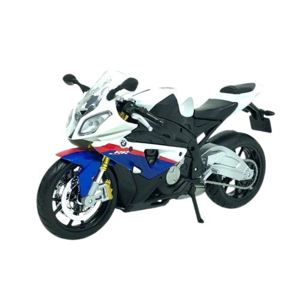

Coleção Oficial
Moto BMW S1000RR
Moto BMW S1000RR
R$ 69,90
A S 1000 RR provocou uma revolução na categoria das superesportivas no seu lançamento em 2009. Desde então, a moto continua em evolução, lapidando ainda mais seu projeto testado e aprovado por pilotos do mundo todo. Com 210 cv e torque de 113 Nm à 11.000rpm, a S 1000 RR continua arrasadora e traz o que há de mais moderno em termos de tecnologia embarcada. O resultado é uma moto com menos peso e uma melhoria evidente no desempenho.
Relembre as estradas percorridas e as experiências vividas com esta coleção oficial dos carros Japoneses.
Escala colecionador: 1:43